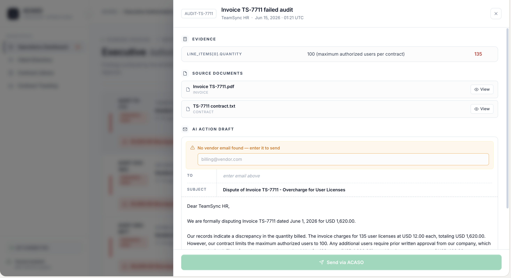
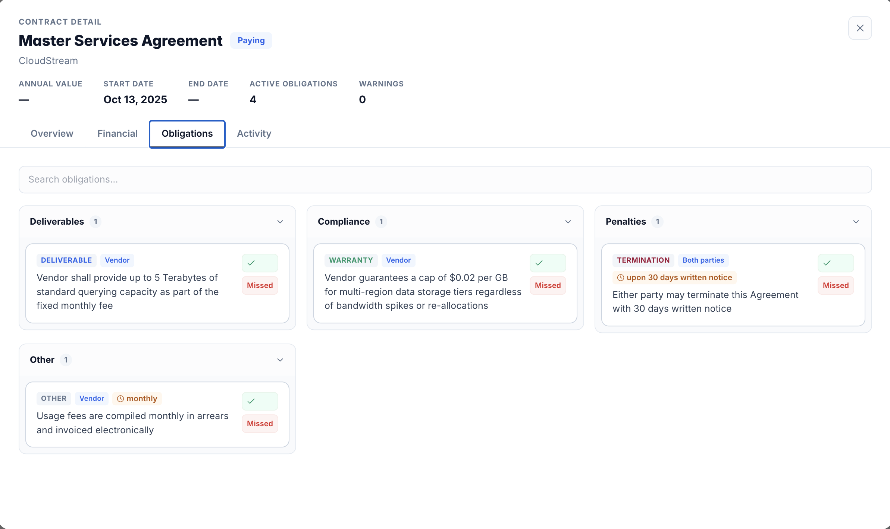
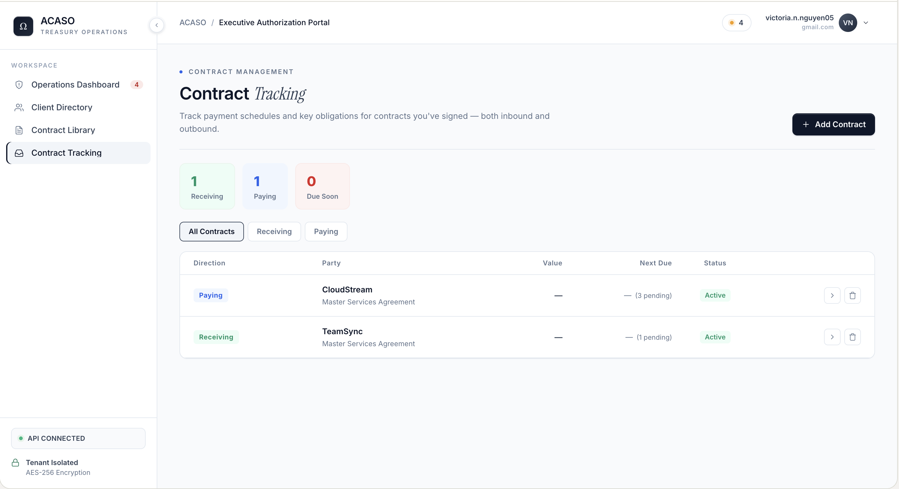

|
ACASO continuously reviews contracts, invoices, payments, and receivables to uncover overbilling, missed revenue, overdue collections, and financial risks before they impact cash flow.
How ACASO Works
Upload documents or connect your systems.
- Email forwarding
- Shared drives
- ERP integrations
- Direct uploads
ACASO finds discrepancies and risks across every record.
- Overbilling
- Duplicate charges
- Contract violations
- Overdue receivables
- Compliance issues
Review evidence-backed findings and send approved actions.
- Every finding linked to source documents
- Nothing executes without approval
Everything your team needs,
in one place.





Every finding is
backed by evidence.
No black-box AI decisions. ACASO cites the contract clause, the invoice line, and the recommended next step — so your team can verify and approve in seconds, not hours.

Why Finance Teams
Use ACASO
Most companies don't have a visibility problem. They have a review problem.
| Workflow | Without ACASO | With ACASO |
|---|---|---|
| Invoice Review | Manual invoice reviews | Automated verification |
| Contract Terms | Buried in PDFs | Tracked automatically |
| Aging Reports | Sit untouched | Collection workflows prepared |
| Financial Issues | Discovered too late | Surfaced before action is taken |
| Evidence Gathering | Teams spend hours | Packaged automatically |
Is ACASO right
for your team?
- Managing hundreds of invoices per month
- Tracking complex multi-party vendor agreements
- Chasing overdue receivables with a lean team
- Running financial ops without a large back-office
Three ways ACASO
protects cash flow.
verified.
Compare invoices against negotiated pricing, amendments, billing schedules, and contractual obligations.
- Overcharges
- Duplicate billing
- Unauthorized fees
- Tax discrepancies
- Pricing violations
and what to do next.
Monitor outstanding invoices, prioritize collection efforts, and generate escalation-ready collection workflows.
- Overdue balances
- Payment delays
- High-risk accounts
- Collection opportunities
through the cracks.
Track financial obligations, payment deadlines, unresolved disputes, contract changes, and operational risks from a single system.
- Obligation tracking
- Deadline monitoring
- Dispute status
- Contract changes
- Operational risk
No black-box decisions.
Every ACASO finding arrives with the evidence your team needs to act — or push back.
Built for sensitive
financial data.
ACASO is designed to help finance teams maintain control while increasing visibility. Every action is reviewable, every record is traceable, and your data never leaves the boundaries you define.
Questions, answered.
Leave no financial
"what ifs."
Every contract. Every invoice. Every payment. Reviewed before uncertainty becomes loss.